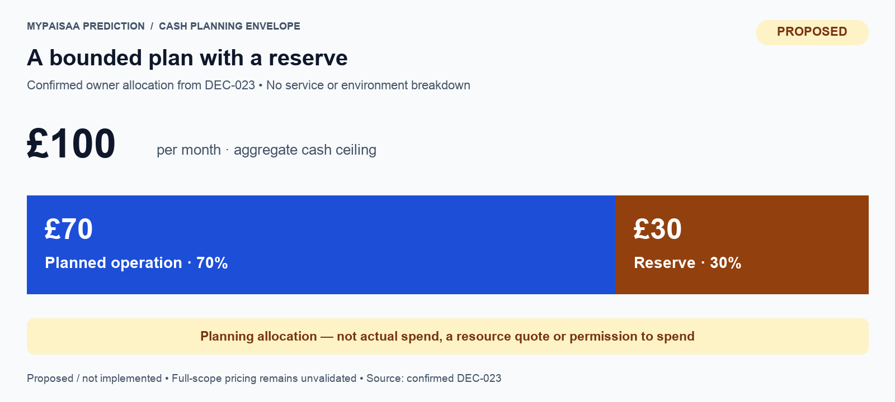
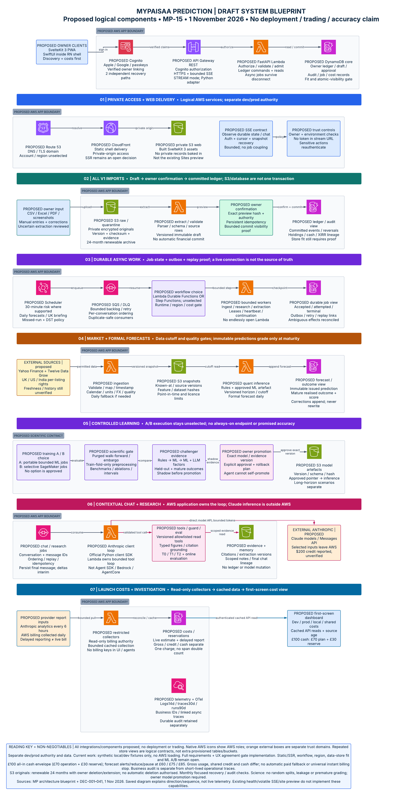
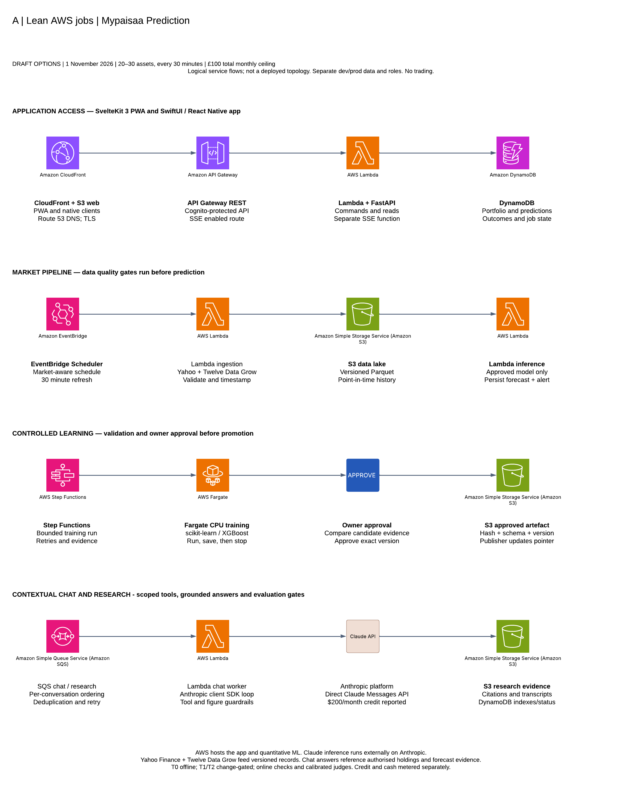
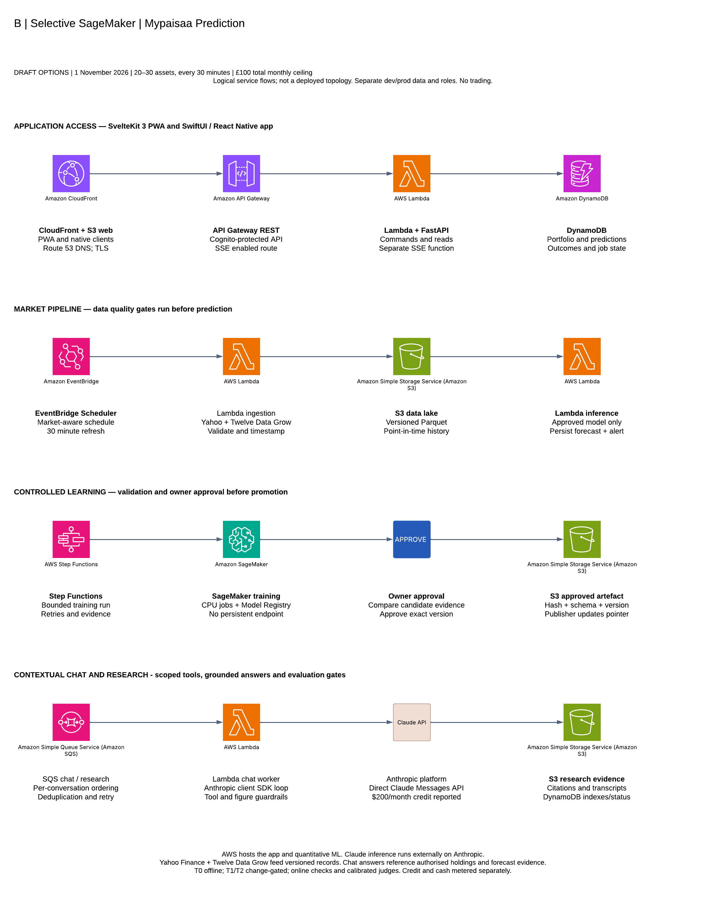
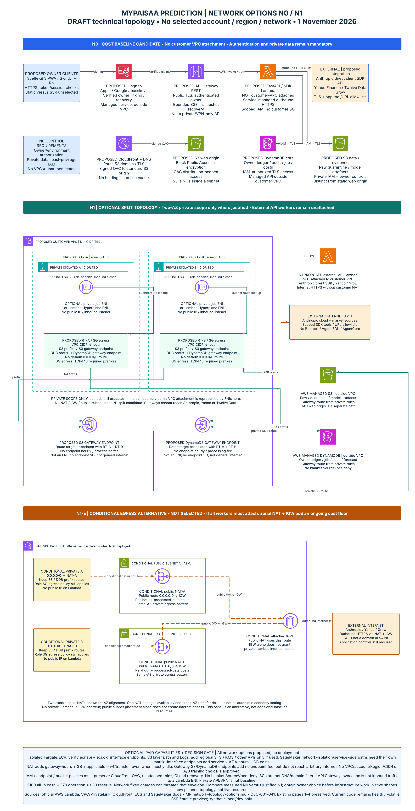

Requirements and architecture / 1 November 2026
Technology stack and component contracts
MP documentation published · Round 4: no blockers
Five new pages, six hub updates, eight visuals and eleven Jira descriptions were verified. Current completion record · Publication receipt. Text below preserves the reviewed preparation state, including its historical pending labels. End-to-end requirements, UX and architecture choices remain unapproved; no application deployment occurred.
DRAFT · MP-15 · 1 November 2026 · Planning only · Independent review not run
This matrix separates repository evidence, confirmed product preferences and unselected implementation proposals. Read it with the architecture blueprint, DEC-001–041 and audit/cost requirements. A locked dependency is not a working feature. No implementation, paid service activation or publication is authorised by this document.
1. Current repository evidence
| Component | Evidence checked | Actual state and target implication |
|---|---|---|
| Python runtime | backend/pyproject.toml: >=3.12; CI selects 3.12 |
Starter target. Future runtime must match chosen Lambda/adapters/orchestrator, not just this minimum |
| API | Manifest fastapi>=0.115,<1.0; lock 0.162.0 |
API version 0.1.0, health and sample SSE only; versioned /api/v1 remains planned product boundary |
| Validation/config | Pydantic lock 2.14.2, Pydantic Settings 2.16.2 | Starter configuration; typed product schemas still to define |
| Local serving/SSE | Uvicorn 0.54.0, sse-starlette 2.4.1 in lock |
Local ASGI/SSE sample; no evidence of Lambda streaming compatibility or durable subscriptions |
| Dependency management | backend/uv.lock; CI uv 0.12.9 |
Frozen dependency/check workflow exists; listed versions are repository resolutions, not latest-version claims |
| Data optional group | SQLAlchemy 2.1.6, asyncpg 0.32.0, Alembic 1.20.1 locked | Historical PostgreSQL declarations; no implemented ledger or DynamoDB persistence |
| ML optional group | NumPy 2.5.4, pandas 2.3.3, scikit-learn 1.9.1 locked | Available planning baseline only; no fitted forecast model/evaluator or demonstrated performance |
| Agent optional group | claude-agent-sdk>=0.1, lock 0.2.176 |
Superseded target preference; direct official Anthropic client SDK loop must replace/reconcile this declaration in a later authorised implementation |
| Test/lint | pytest 8.4.2, Ruff 0.17.3 locked | Existing checks cover starter/tooling/preview; no product/security/device/evaluation certification |
| Web/mobile/infra | Static site/dist/index.html; no executable target clients/IaC established |
Current preview is not the SvelteKit PWA; native and infrastructure remain to build |
Source of versions: manifest, lock, CI. Existing historical stack document and ADRs retain earlier choices; this matrix flags the drift instead of rewriting them. Version bumps must include a compatibility/security and budget check when implementation is authorised.
2. Target matrix
Status key: confirmed direction records an owner preference/requirement, proposed needs a technical decision, open has meaningful alternatives. All target product components remain unimplemented unless the current-evidence table says otherwise. Cost impact describes what must be measured, not a quotation.
| Layer/component | Technology and status | Responsibility/interface | Alternative or unresolved decision | Cost impact and first evidence |
|---|---|---|---|---|
| Web app | SvelteKit 3, TypeScript PWA; confirmed direction | Discovery dashboard first; holdings separate; contextual chat, imports, proof, costs; /api/v1 and event schema |
Static shell proposed versus SSR; UI/UX approval still required | Static S3/CloudFront versus extra SSR compute; measure bundle, accessibility and authenticated routing |
| PWA offline/push | Service worker, explicit private-cache policy, Web Push; proposed details | Asset cache, update lifecycle, permission/status and private notification routing | Platform capability/device matrix, offline private-data scope, push transport | Storage/transfer and delivery/retry cost; logout/data-clear and stale-version cases |
| Native Apple | Swift/SwiftUI in RN shell; confirmed direction | Swift screens/cache/secure-device integration/widgets; RN navigation/typed bridge | Exact SDK/RN/Swift versions, supported OS/device “Duo” interpretation | Apple membership/build/signing and bridge maintenance; adaptive iPhone/iPad evidence |
| API language/framework | Python/FastAPI/Pydantic; confirmed direction | Owner/env authorization, validated commands/queries, durable jobs, OpenAPI | Runtime/package lock refresh after adapter/workflow choice | Lambda duration/memory/cold starts; contract tests and measured payload/latency |
| Edge and web origin | Route 53, CloudFront, private S3; preferred | DNS/TLS/static assets; authenticated data excluded from public caches | Domain/region/origin policy and SSR choice | DNS/domain/CDN/requests/transfer; cache-isolation and origin-access tests |
| API front door | API Gateway; REST STREAM proposed for SSE |
Authenticated HTTPS and bounded observation streams | All REST versus split HTTP API commands + REST stream; additional complexity/cost needs evidence | API request/stream costs plus duration; no assumed HTTP API SSE compatibility |
| Python streaming | Lambda Web Adapter/custom streaming runtime candidate; open | Incremental ASGI response via supported streaming integration | Dedicated Node stream bridge if Python integration proves unsuitable | Packaging, invocation duration and durable-event polling; stream cancellation/reconnect spike |
| Identity | Cognito managed login, Apple/Google/passkeys; confirmed | Authentication and verified canonical owner linking | Pool tier, passkey/local profile flow, sessions/revocation/recovery proof | Identity tier/feature and external enrollment costs; two independent passkey paths plus verified links |
| App compute | On-demand Lambda; preferred | Bounded APIs, ingest/infer/research/collectors; least-privilege functions | Package/runtime/memory/concurrency; heavy jobs outside invocation limits | Duration/concurrency/logging/transfer; no provisioned capacity assumed |
| Network N0/N1 | Customer-VPC-unattached Lambda baseline candidate versus optional two-AZ private split; open | Auth/IAM/private S3 apply to both; N1 scopes private ENIs/SGs/routes/endpoints to justified work | No selected account/Region/CIDR; external Anthropic/Yahoo/Grow workers remain unattached in N1 | Compare fixed costs and path requirements; network appendix and native VPC diagram |
| Conditional egress N1-E | Public zonal NAT/IGW or paid interface endpoints only where required; unselected | Real outbound route if all workers attach; bootstrap/runtime service reachability | No internet merely from public-subnet Lambda; no gateway endpoint path to arbitrary internet; static/SSR and A/B remain open | NAT-hours/GB/IPv4/transfer plus endpoint service-AZ-hours/GB can threaten £100 all-in budget; cost/owner gate |
| Scheduling | EventBridge Scheduler; proposed | Daily forecast, supported 30-minute quotes/risk, 07:30 Europe/London briefing, collectors, recovery checks | Weekend briefing and catch-up/materiality policy | Schedule invocations plus jobs; DST/missed-run/duplicate fixtures |
| Workflow | Lambda Durable Functions or Step Functions; open | Durable steps/waits/retry/approval, continuation references | Code-first checkpointed flow versus external service state machine; region/runtime proof | Checkpoints/transitions/storage/duration; compare full representative workflow |
| Queue/outbox | Durable transactional outbox + SQS/DLQ as justified; proposed | Dispatch gaps, backpressure, attempts/leases/recovery; per-conversation sequencing | FIFO versus application ordering, exact queue topology, fan-out | Queue polling/requests/retries; duplicate and crash-boundary cases |
| Durable operational core | DynamoDB preferred; schema open | Ledger/import/job/approval/prediction/outcome/cost records and indexes | Relational alternative if atomic visibility/query complexity fails fit gate | Read/write/index/transaction/backup/restore; multi-row financial invariants and replay |
| Private evidence/artefacts | S3 encryption/version/checksum references; confirmed archive direction | Originals, snapshots, model/feature/evaluation artefacts; metadata refs | Encryption key policy, lifecycle/delete semantics, format/partitioning | Storage/version/request/backup/egress; 24-month renewable originals; no automatic deletion authorised |
| Tabular import | CSV/Excel deterministic parsers; proposed libraries | Typed rows, source cells, preview/match/dedupe/confirm/reversal | Exact formats/layouts; safe formula/macro/external-link handling | Bounded parsing/storage; synthetic malformed/duplicate/large-file cases |
| Document extraction | Local/Python PDF/image parsing/OCR with optional bounded Claude extraction; open | Page/region/source evidence and confidence; uncertain rows require review | OCR/parser/model choices; no promise every broker layout | CPU/packages and metered extraction; restrict pixels/pages/tokens and stored sensitive text |
| Data providers | Yahoo Finance + Twelve Data Grow; selected | Instrument-aware adapters, validation/provenance/availability | Exact Grow tier, quota/UK-US-India listings/history/rights; no extra paid feed without permission | Subscription, FX/tax and request budgets; source fixtures now, real entitlements before activation |
| Instrument/market registry | Versioned typed contract; proposed implementation | Issuer/security/listing, calendars/units/currencies/FX/benchmarks, theme/exposure versions | Exact indices, return/FX/corporate-action timing and calendar conventions | Registry/source maintenance; known-answer split/dividend/GBp/GBP/holiday cases |
| Ledger/performance/rules | Deterministic typed Python core; proposed | Transactions/cash/holdings, XIRR, risk/indicators/weights, explainable recommendations | Numeric precision, XIRR no/multiple-root conventions, score formulas/action bands | CPU/storage/evidence; invariant/known-answer tests before LLM narration |
| Numerical baseline/ML | NumPy/pandas/scikit-learn baseline; proposed family set | Features, chronological folds, calibration, benchmarks and artefact exports | Specific model families/versions and evidence thresholds; optional larger libraries only by proof | Bounded training/evals/inference and data storage; no accuracy guarantee |
| ML execution A | Portable bounded jobs; unselected option | Reproducible training/artefact/version/evaluation contracts | Suitable runner when Lambda duration/memory insufficient | Measure job/operations cost, not just inference |
| ML execution B | Selective SageMaker jobs/registration; unselected option | Managed bounded training/experiment/model record where justified | Is operational evidence worth managed setup/extra cost? | Training/jobs/artefact/registry/monitoring; no always-on endpoint |
| Research/model client | Official Anthropic client SDK, explicit bounded loop on Lambda; confirmed | Structured factor extraction, cited evidence and chat, scoped deterministic tools | Specific client/model versions and compatible streaming/tool schemas | Gross tokens/cache/tool/eval usage; credit eligibility unverified; no Agent SDK/Bedrock/AgentCore target |
| Agent catalogue/memory | Versioned manifests, scoped durable notes/cache; proposed | Tool authority, prompt/eval/budget contracts, per-conversation provenance | Exact role split, memory retention, context/caching policy | Input/history/caching/storage/judges; no silent agent privilege changes |
| Guardrails/evaluations | Deterministic T0 plus bounded T1/T2/online suites; required capability | Prompt-injection, numerical grounding, abstention, capability/safety regressions and owner-calibrated judges | Exact case counts/thresholds/trials and model/prompt policy | Evaluation spend is inside same all-in/credit envelope; quality judging distinct from predictive scoring |
| Forecast/outcome registry | Append-only records with artefact refs; confirmed invariant | Declared target/horizon/cutoff/model, immutable issued forecast, mature outcome/versioned score | Precise schema, mature samples and scenario-vs-forecast contracts | Durable storage and replay; no operational TTL deletion of required lineage |
| Cost admission/reconciliation | Durable reservations, price tables and cached aggregates; required | Concurrent liability accounting, environment/agent attribution and estimate/report reconciliation | Service allocations, credit thresholds and acceptable report age still proposed | Monitor the monitor: collectors, reads, storage, queries and alerts all cost money |
| Billing collectors | Anthropic analytics 6-hourly; AWS daily; confirmed cadence | Restricted server-side collection, covered-through/version/source health | Actual account permissions/API compatibility, tag availability and organization balance visibility | Cost Explorer paid pagination; dashboard refresh uses cache; no credentials in clients/agents |
| Telemetry/audit | OpenTelemetry convention; CloudWatch/trace backends under evaluation | Business/run correlation, redacted logs, metrics, linked async traces and investigation | Product/tool selections, sampling/export/storage and durable audit retention | Logs14d/traces30d/runs90d initial policy; long-lived audit separately costed |
| CI/CD/IaC | Existing GitHub Actions; CDK or CloudFormation proposed | Locked builds, schema/security/unit/integration/UI/eval gates, plan-only IaC and controlled release | IaC language/tool, accounts/region, artifact signing/provenance, deployment approval | Build minutes/artifacts/scanners/test devices plus infrastructure; no apply/deploy now |
| Backup/recovery | Store-specific snapshots/versioned archives and reproducible restore; proposed | Consistent ledger/evidence/artefact/audit recovery and monthly focused drills | RPO/RTO, backup windows/key recovery/deletion policy | Backup/version storage, restore and drill costs; proof before treating data as protected |

3. Compatibility facts checked against primary sources
- SvelteKit 3 is available. The official announcement is dated 1 October 2026; the migration guide covers its breaking changes. No SvelteKit version is currently installed in this product. Select a compatible exact Svelte/Kit/Vite/Node/adapter set with a lock when the build is authorised; do not substitute historical Svelte 3 for SvelteKit 3.
- Static and SSR differ. SvelteKit static adapter produces static files. Dynamic server logic needs another adapter/runtime; Cognito client sign-in alone does not create server-side SvelteKit sessions.
- SSE is a constrained AWS integration. API Gateway documents REST proxy response streaming and a 15-minute ceiling. Lambda documents Python custom runtime/Web Adapter requirements and billed continuation after disconnect. Region availability and the complete authenticated Python path still need validation.
- Workflow runtime matters. Durable Functions’ supported runtimes include Python 3.13/3.14 at this check; the starter CI’s Python 3.12 is not sufficient evidence for that choice. Step Functions remains the external state-machine alternative; neither is activated or selected here.
- Financial atomicity has real bounds. DynamoDB transactions have action/size/idempotency limits. A staged immutable import with consistent commit visibility or an explicit relational alternative needs proof before design approval.
- Cognito features do not prove a complete recovery design. Authentication flows describe federation/passkeys; federated linking is a privileged identity operation. Validate tier, canonical local owner, linking, recovery and reauthentication as one flow; do not grant access on email equality.
- Claude tool use is an application trust boundary. The official tool-use guide describes the model/client exchange. Here, tool allowlists, authority, idempotency, budgets and continuation are controlled by our server code. Official client SDK support is different from adopting Claude Agent SDK.
- Costs are not instantaneous. Cost Explorer documents delayed updates and paid paginated queries. Anthropic analytics is a historical organization report, not proof of the owner’s promotional balance. Permission/response/API version checks remain future implementation evidence.
These facts were checked on 1 November 2026 through official documentation/web or AWS MCP documentation tools. No AWS/Anthropic account calls or credential inspection were made. Target versions, quotas, pricing and regional support must be checked again at implementation; this draft makes no compatibility guarantee based only on a package name.
4. Ownership, contracts and launch gates
Environment is an immutable attribute on business/job/cost evidence. Dev and prod have separate write authority, stores, queues and client configurations; local uses prepared offline fixtures. Shared DNS/builds/organization credits are reported once under an agreed allocation or shared/unallocated view. Separate resources do not imply verified cost tags or separate credit pools.
Contract pack required before app build: owner/session claims and protected actions; instruments/FX/calendars; import manifest/preview/confirmation/commit visibility; ledger/precision/reversals; job/outbox/retry/cancel; event cursor/snapshot/reconnect; source/factor/feature lineage; model/forecast/mature outcome; conversation/tool/agent/evaluation manifests; cost reservation/report reconciliation; audit retention/deletion/restore; Swift/RN/web compatibility schemas. Put schema version and environment on durable envelopes and preserve backward compatibility through rolling client/backend upgrades.
The source requirements contain 140 captured MA stories mapped into Prediction capabilities; that inheritance is not permission to duplicate their old stack choices or call target functionality implemented. Future China/Taiwan/Hong Kong/continental Europe, theme expansion and model families require rights, evaluated compatibility, incremental cost and owner approval; the initial 20–30-instrument examples do not fund all future scope.
Minimum readiness evidence: end-to-end requirements and UX agreement; ADR conflict resolution and A/B choice; full-scope £70 operation/£30 reserve recost; source/layout/device identity gates; contract/invariant/error/recovery cases; security/access-isolation and package checks; quant leakage/calibration/ablation tests; web/native accessibility/reconnect/offline/push tests; budget exhaustion/ambiguous-call reconciliation; monthly restore/audit exercise design. Apply these with each layer, then run complete release gates. Current CI does not establish that evidence.
Significant architecture diagrams remain in the existing Lucidchart source. Under the owner's later explicit diagram request, a new detailed draft page 4 (jvMISWi7AU3v, document version 2703) was appended; existing A/B/C pages were verified unchanged. Native detailed PNG · Actual canvas source snapshot · Native export provenance/hashes and clean canvas validation. Exact native AWS shape IDs were discovered through Lucid before creation. The diagram remains logical/proposed, with A/B training and workflow choice open; no network/account/deployment is implied. Prior A/B export metadata remains historical comparison evidence. No Confluence publication, sharing change, invitation or paid feature occurred. See the blueprint for phase mapping and ADR backlog. This document remains unreviewed until the owner approves independent review under the project workflow.

The subsequent explicit VPC/network request added native page 5 (VNMISlFqoQy9, document version 4333). N0/N1 technical appendix · Native network PNG · Actual source · Export/validation/preserved-pages manifest. S3/DynamoDB/Cognito/API Gateway/CloudFront stay outside the customer VPC. Native subnet/SG/ENI/gateway/NAT shapes show proposed boundaries and unselected alternatives, with no network or paid endpoint approved. The appendix is intended inline with the MP architecture page; no additional Confluence child page or publication was created. Original pages 1–4 remain unchanged.
The confirmed cash planning envelope



Detailed proposed MP system
Native Lucidchart export with AWS components and labelled logical boundaries. Training/workflow choices and full-scope costs remain open.

Native Lucidchart planning references
Editable Lucidchart source · Source/export manifest
Proposed A: portable ML jobs


Proposed B: selective SageMaker


Detailed AWS network options
